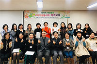
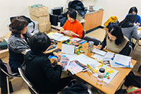
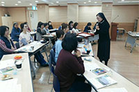
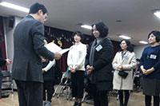

인성교육봉사자
교육자원봉사자는 I-Brand반 수업에 파견되는 학교사목부 CA 소속 인성교육 강사입니다. 자격교육 및 월례교육을 통해 양성된 교육자원봉사자들은 서울 지역의 초·중·고등학교의 창의적 체험활동과 범교과활동 시간에 파견되어 가톨릭의 가치와 문화를 전하고 있습니다.




| 임원 | 이름 | |
|---|---|---|
| 회장단 | 회장 | 최희선 소피아 |
| 부회장 | 이현옥 모니카 | |
| 총무 | 유영경 그라시아 | |
| 화요반 | 팀장 | 최희준 모니카 |
| 팀장 | 이우연 베로니카 | |
| 토요반 | 팀장 | 홍연주 비비안나 |
| 팀장 | 성은주 마르티나 | |